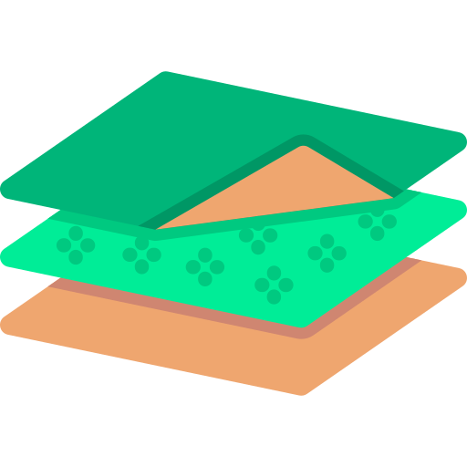

<ng-container>
    <div class="list-title">
        <i class="fas fa-chevron-down cursor-pointer"></i>
        <div class="title">Maps</div>
        <i class="fas fa-plus cursor-pointer" (click)="showNewMapForm = true; this.currentMap = null;"></i>
    </div>
    <div class="content-list">
<!--            <div class="content-list page-list recursive-list" dragula="MAPS" [(dragulaModel)]="maps">-->
<!--                <div class="item" *ngFor="let map of maps;let i = index;" (click)="onSelectMap($event, map)" [class.open]="currentMap === map">-->
<!--                    <div class="item-name">-->
<!--                        <div (click)="openListItem($event, map);">-->
<!--                            <i class="fas fa-chevron-right item-icon" *ngIf="map.objects && map.objects.length > 0"></i>-->
<!--                        </div>-->
<!--                        <div>-->
<!--                            -->
<!--                        </div>-->
<!--                        <div>{{map.name}}</div>-->
<!--                        <span class="item-tools">-->
<!--                            <i class="fas fa-pen"></i>-->
<!--                            <i class="fas fa-trash"></i>-->
<!--                        </span>-->
<!--                    </div>-->
<!--                    <div [style.padding-inline-start.rem]="i + 1">-->
<!--                        <app-recursive-list [list]="map.objects"></app-recursive-list>-->
<!--                    </div>-->
<!--                </div>-->
<!--            </div>-->
        <div *ngIf="maps && maps.length > 0" dragula="MAPS" [(dragulaModel)]="maps">
            <div class="item" [class.open]="currentMap === map" *ngFor="let map of maps;let i = index;" (click)="onSelectMap($event, map)">
                <div class="map-objects">
                    <div class="item-name">
                        <span>{{map.name}}</span>
                        <i class="fas fa-street-view" style="color: lightgreen;" *ngIf="map.toPlayers"></i>
                        <span class="item-tools">
                            <i class="fas fa-male" (click)="toPlayersMap(map)"></i>
                            <i class="fas fa-pen" (click)="renameMap(map)"></i>
                            <i class="fas fa-trash" (click)="removeMap(map)"></i>
                        </span>
                    </div>
                    <form [formGroup]="renameMapForm" (submit)="onSubmitRenameMap(map)" *ngIf="map == mapToRename && showRenameMapForm">
                        <input type="text" placeholder="Map ..." autofocus [formControlName]="'name'">
                    </form>
                </div>
                <app-recursive-list [list]="map.objects"></app-recursive-list>
            </div>
        </div>
        <form [formGroup]="newMapForm" (submit)="onAddNewMap()" *ngIf="showNewMapForm">
            <div class="item active">
                <input type="text" placeholder="OurKonvaMap ..." autofocus [formControlName]="'name'">
            </div>
        </form>
    </div>

</ng-container>
